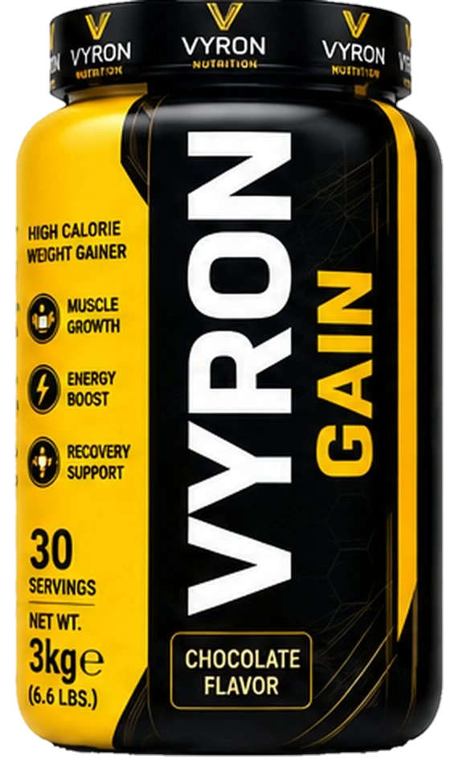
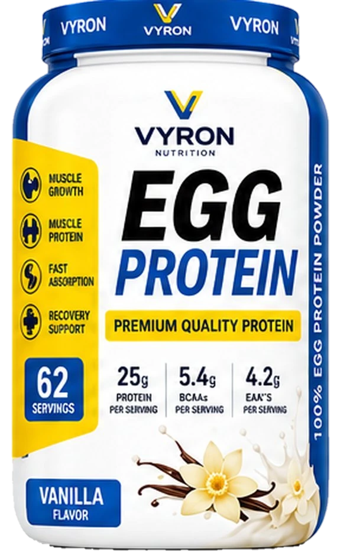
VYRON PIT develops sports nutrition supplements built on German technology. Our promise is simple: premium quality, grounded in science, made for results.
Two formulas, one brand. Browse every side of the pack: front, sides, back and lid.
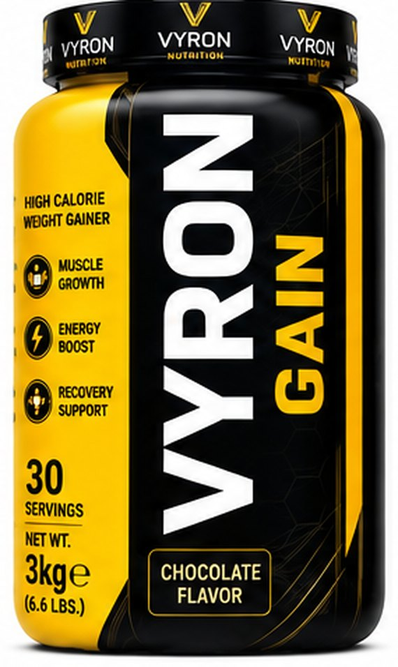
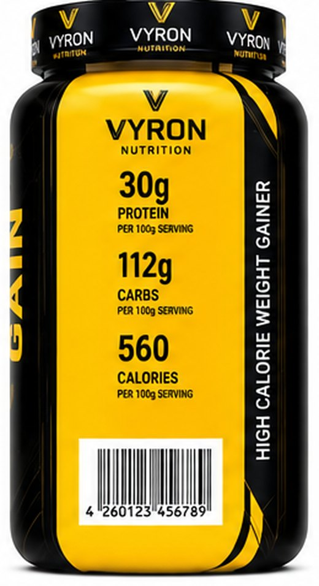
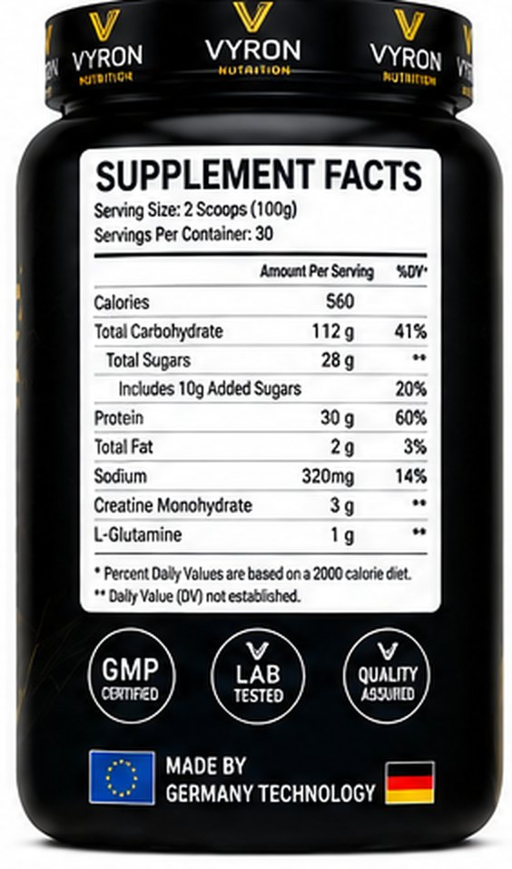
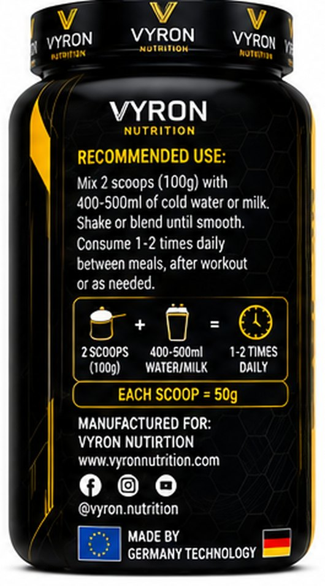
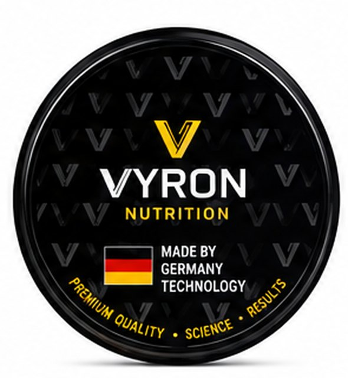
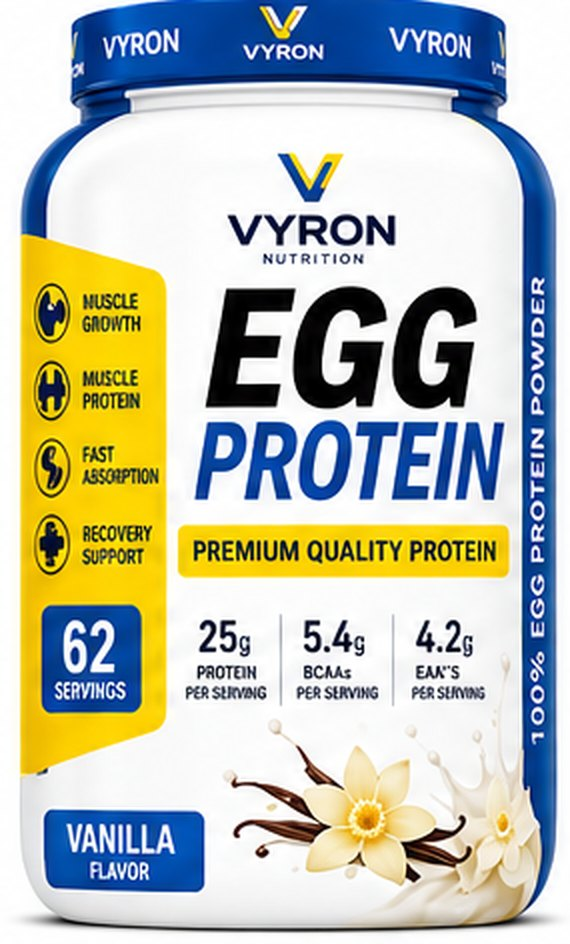
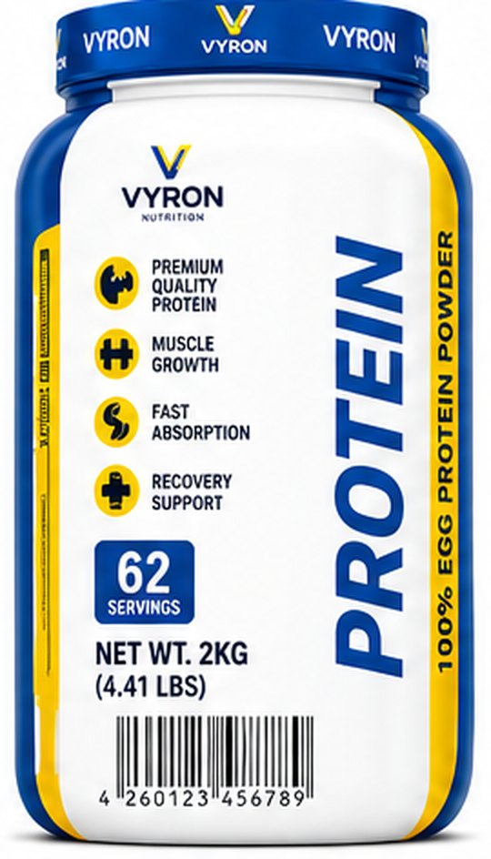
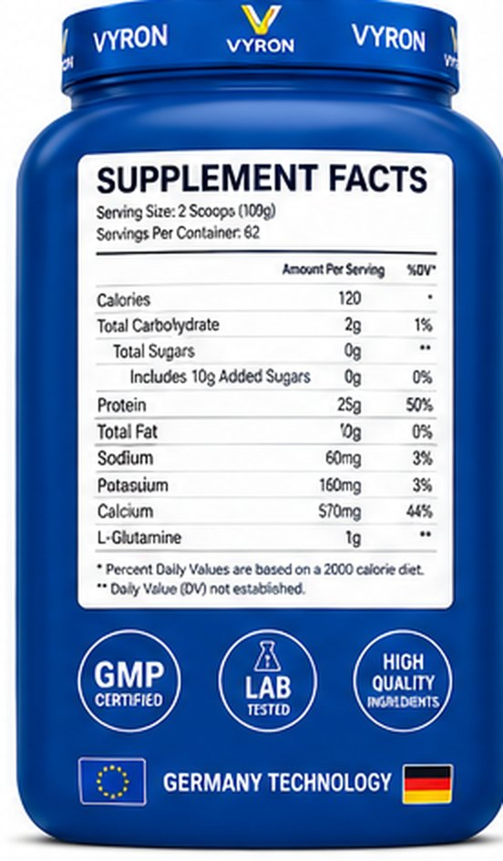
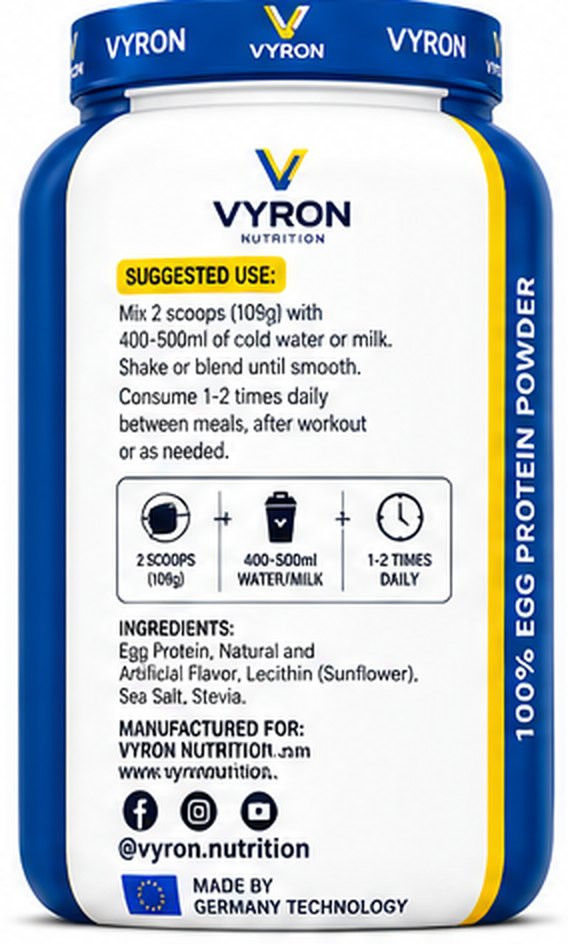
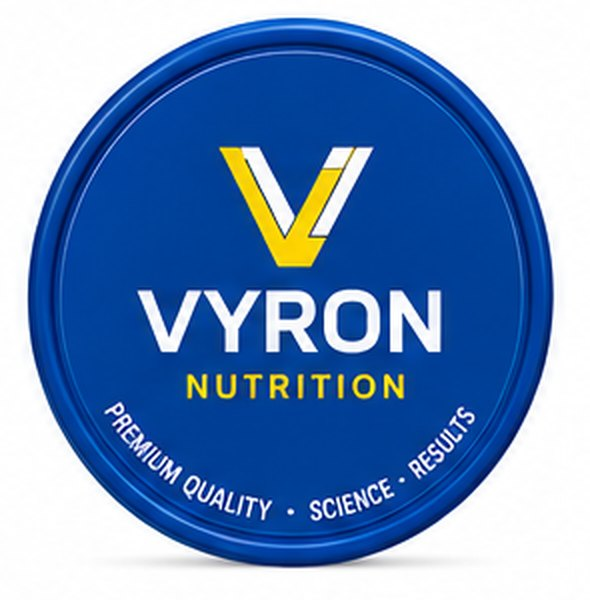
VYRON PIT — Made by German Technology